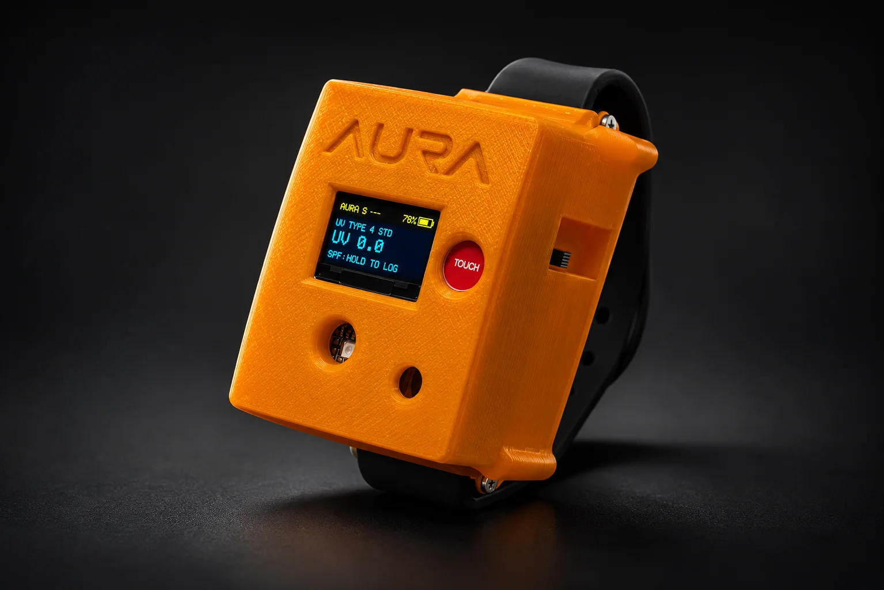

MADE FOR
THE MOMENT
OUTSIDE.
A little orange wearable. A big question: how can we be more aware of the world around us?
Project AURA brings UV awareness and experimental vital indicators together in a student-built prototype.


It started with
a summer day.
A moment with his brother made Armaan wonder: what if we could pay closer attention before a day outside becomes too much?
That question became Project AURA — part curiosity, part circuit board, and a lot of learning by making.
Read Armaan’s story→ in action.SUPERCHARGED · 2875
Four signals.
One question.
UV, heart rate, blood oxygen and temperature — brought together for exploration, not diagnosis.
The outside signal.
The prototype estimates UV levels and tracks approximate exposure time. Its mapping needs calibration against a reference.
Explore the wearableAURA is an experimental prototype. Readings can be inaccurate; use appropriate protection and a medical device for health decisions.
More than
a device.
Meet the story, the hands that built it and the people cheering it on.
Curiosity looks
good in orange.
Explore the real build, try the simulated app, and follow the idea as it develops.